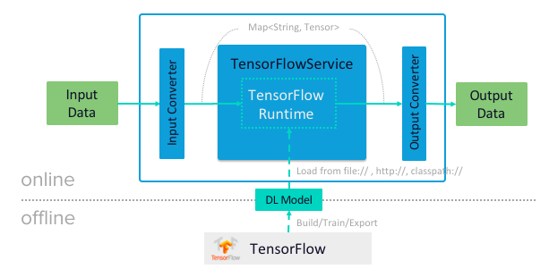

User manual for the mind-model-services collection of projects.
Introduction
Java libraries for enabling and simplifying the inference of Deep Learning models with java.
 Java wrappers for various state-of-the-art deep learning models are provided. You can use them in standalone java application, SpringBoot microservices as well as streaming, batch and serverless programing models.
Services for different computer vision and language processing use cases are provided. The implementation relies the TensorFlow Java API as well as the DL4J stack and APIs such as JavaCV, ND4J ND4J-Tensorflow.
Service Catalog
Object Detection
Java model inference library for the TensorFlow Object Detection API. Allows real-time localization and identification of multiple objects in a single or batch of images. Works with all pre-trained zoo models and object labels.
|
The ObjectDetectionService takes an image or a batch of images and outputs a list of predicted objects bounding boxes
represented by ObjectDetection.
For the models supporting Instance Segmentation,
the The JsonMapperFunction permits
converting the |

Usage
Add the object-detection dependency to the pom (use the latest version available):
<dependency>
<groupId>io.mindmodel.services</groupId>
<artifactId>object-detection</artifactId>
<version>1.0.0-SNAPSHOT</version>
</dependency>Example 1: Object Detection
The ExampleObjectDetection.java
sample demonstrates how to use the ObjectDetectionService for detecting objects in input images. It also shows how to
convert the result into JSON format and augment the input image with the detected object bounding boxes.
1
2
3
4
5
6
7
8
9
10
ObjectDetectionService detectionService = new ObjectDetectionService(
"http://download.tensorflow.org/models/object_detection/faster_rcnn_nas_coco_2018_01_28.tar.gz#frozen_inference_graph.pb", (1)
"https://raw.githubusercontent.com/tensorflow/models/master/research/object_detection/data/mscoco_label_map.pbtxt", (2)
0.4f, (3)
false, (4)
true); (5)
byte[] image = GraphicsUtils.loadAsByteArray("classpath:/images/object-detection.jpg"); (6)
List<ObjectDetection> detectedObjects = detectionService.detect(image); (7)
| 1 | Downloads and loads a pre-trained frozen_inference_graph.pb model directly from the faster_rcnn_nas_coco.tar.gz archive in the
Tensorflow model zoo. Mind that on first attempt it will download few hundreds of MBs. The consecutive runs will use the
cached copy (5) instead. |
| 2 | Object category labels (e.g. names) for the model |
| 3 | Confidence threshold - Only object with estimate above the threshold are returned |
| 4 | Indicate that this is not a mask (e.g. not an instance segmentation) model type |
| 5 | Cache the model on the local file system. |
| 6 | Load the input image to evaluate |
| 7 | Detect the objects in the image and represent the result as a list of ObjectDetection instances. |
Next you can convert the result in JSON format.
1
2
String jsonObjectDetections = new JsonMapperFunction().apply(detectedObjects);
System.out.println(jsonObjectDetections);
[{"name":"person","estimate":0.998,"x1":0.160,"y1":0.774,"x2":0.201,"y2":0.946,"cid":1},
{"name":"kite","estimate":0.998,"x1":0.437,"y1":0.089,"x2":0.495,"y2":0.169,"cid":38},
{"name":"person","estimate":0.997,"x1":0.084,"y1":0.681,"x2":0.121,"y2":0.848,"cid":1},
{"name":"kite","estimate":0.988,"x1":0.206,"y1":0.263,"x2":0.225,"y2":0.314,"cid":38}]]Use the ObjectDetectionImageAugmenter to draw the detected objects on top of the input image.
1
2
byte[] annotatedImage = new ObjectDetectionImageAugmenter(false).apply(image, detectedObjects); (1)
IOUtils.write(annotatedImage, new FileOutputStream("./object-detection/target/object-detection-augmented.jpg")); (2)
| 1 | Augment the image with the detected object bounding boxes (Uses Java2D internally). |
| 2 | Stores the augmented image as object-detection-augmented.jpg image file. |

Set the ObjectDetectionImageAugmenter#agnosticColors property to true to use a monochrome color schema.
|
Example 2: Instance Segmentation
The ExampleInstanceSegmentation.java
sample shows how to use the ObjectDetectionService for Instance Segmentation.
NOTE: It requires a trained model that supports Masks as well as setting the instance segmentation (e.g. useMasks) flag to true.
1
2
3
4
5
6
7
8
9
10
11
12
13
14
15
16
ObjectDetectionService detectionService = new ObjectDetectionService(
"http://download.tensorflow.org/models/object_detection/mask_rcnn_inception_resnet_v2_atrous_coco_2018_01_28.tar.gz#frozen_inference_graph.pb", (1)
"https://raw.githubusercontent.com/tensorflow/models/master/research/object_detection/data/mscoco_label_map.pbtxt", (2)
0.4f, (3)
true, (4)
true); (5)
byte[] image = GraphicsUtils.loadAsByteArray("classpath:/images/object-detection.jpg");
List<ObjectDetection> detectedObjects = detectionService.detect(image); (6)
String jsonObjectDetections = new JsonMapperFunction().apply(detectedObjects); (7)
System.out.println(jsonObjectDetections);
byte[] annotatedImage = new ObjectDetectionImageAugmenter(true).apply(image, detectedObjects); (8)
IOUtils.write(annotatedImage, new FileOutputStream("./object-detection/target/object-detection-segmentation-augmented.jpg"));
| 1 | Uses one of the 4 MASK pre-trained models <2> |
| 2 | Confidence threshold - Only object with estimate above the threshold are returned |
| 3 | Use masks output - For the pre-trained models instruct to use the extended fetch names that include instance segmentation masks as well. |
| 4 | Cache model - Create a local copy of the model to speed up consecutive runs. |
| 5 | Evaluate the model to predict the object in the input image. |
| 6 | Convert the detected object in to JSON array. NOTE: that with mask there is an additional filed: mask |
| 7 | Draw the detected object on top of the input image. |

Models
All pre-trained detection_model_zoo.md models are supported. Following URI notation can be used to download any of the models directly from the zoo.
http://<zoo model tar.gz url>#frozen_inference_graph.pb
The frozen_inference_graph.pb is the frozen model file name within the archive.
| For some models this name may differ. You have to download and open the archive to find the real name. |
To speedup the bootstrap performance you may consider extracting the frozen_inference_graph.pb and caching it
locally. Then you can use the file://path-to-my-local-copy URI schema to access it.
|
Following models can be used for Instance Segmentation as well:
In addition to the model, the ObjectDetectionService requires a list of labels that correspond to the categories detectable by the selected model.
All labels files are available in the object_detection/data folder.
| It is important to use the labels that correspond to the model being used! Table below highlights this mapping. |
| Model | Labels |
|---|---|
| For performance reasons you may consider downloading the required label files to the local file system. |
Semantic Segmentation
Java, real-time Semantic Image Segmentation with Tensorflow. This implementation uses the state-of-art deep learning, Tensorflow model: DeepLab.
|
Semantic Segmentation is the process of associating each pixel of an image with a class label, (such as flower, person, road, sky, ocean, or car).
Unlike the |

The JsonMapperFunction permits
converting the List<ObjectDetection> into JSON objects and the
ObjectDetectionImageAugmenter
allow to augment the input image with the detected bounding boxes and segmentation masks.
Usage
Add the semantic-segmentation dependency to your pom (use the latest version available):
<dependency>
<groupId>io.mindmodel.services</groupId>
<artifactId>semantic-segmentation</artifactId>
<version>0.0.1-SNAPSHOT</version>
</dependency>Following snippet demos how to use the PASCAL VOC model to apply mask to an input image
1
2
3
4
5
6
7
8
9
10
11
12
13
SemanticSegmentationService segmentationService = new SemanticSegmentationService(
"http://download.tensorflow.org/models/deeplabv3_mnv2_pascal_trainval_2018_01_29.tar.gz#frozen_inference_graph.pb", (1)
true); (2)
byte[] inputImage = GraphicsUtils.loadAsByteArray("classpath:/images/VikiMaxiAdi.jpg"); (3)
byte[] imageMask = segmentationService.masksAsImage(inputImage); (4)
BufferedImage bi = ImageIO.read(new ByteArrayInputStream(imageMask));
ImageIO.write(bi, "png", new FileOutputStream("./semantic-segmentation/target/VikiMaxiAdi_masks.png"));
byte[] augmentedImage = segmentationService.augment(inputImage); (5)
IOUtils.write(augmentedImage, new FileOutputStream("./semantic-segmentation/target/VikiMaxiAdi_augmented.jpg"));
| 1 | Download the PASCAL 2012 trained model directly from the web. The frozen_inference_graph.pb is the name of the model
file inside the tar.gz archive. |
| 2 | Cache the downloaded model locally |
| 3 | Load the input image as byte array |
| 4 | Read get the segmentation mask as separate image |
| 5 | Blend the segmentation mask on top of the original image |
Models
Based on the training datasets, three groups of pre-trained models provided:
|
|
|
|
|


Select the model you want to use, copy its archive download Url and add a #frozen_inference_graph.pb fragment to it.
Later fragment is the frozen model’s file name inside the archive
Download the archive and uncompress the frozen_inference_graph.pb for required model. Then use the file://<local-file-name>; URI schema.
|
Also convenience there are a couple of models, extracted from the archive and uploaded to bintray:
PASCAL VOC 2012 (default) |
http://dl.bintray.com/big-data/generic/deeplabv3_mnv2_pascal_train_aug_frozen_inference_graph.pb |
CITYSCAPE |
|
ADE20K |
Pose Estimation
Multi-person pose estimation service for detecting human figures in images and videos.
|
The pose estimation service predicts where different body parts are located an how are they spatially relate to each other. The implementation is based on the Realtime Multi-Person 2D Pose Estimation using Part Affinity Fields, OpenPose and tf-pose-estimation. Service uses pre-trained tf-pose-estimation TensorFlow models
to predict the locations and the affinity of the body parts. Predictions are represented by |
|


Usage
Add the pose-estimation dependency to your pom (Use the latest version available):
<dependency>
<groupId>io.mindmodel.services</groupId>
<artifactId>pose-estimation</artifactId>
<version>0.0.1-SNAPSHOT</version>
</dependency>Create a PoseEstimationService with the cmu-graph_opt.pb pre-trained model and use it to detect the poses
in the tourists.jpg image:
1
2
3
4
5
6
PoseEstimationService poseEstimationService = new PoseEstimationService(
"https://dl.bintray.com/big-data/generic/2018-05-14-cmu-graph_opt.pb", (1)
true);(2)
byte[] inputImage = GraphicsUtils.loadAsByteArray("classpath:/images/tourists.jpg");
List<Body> bodies = poseEstimationService.detect(inputImage);(3)
String bodiesJson = new JsonMapperFunction().apply(bodies); (4)
| 1 | URI of the pre-trained, frozen Tensorflow model |
| 2 | Download and cache the model locally. |
| 3 | Service takes an image (or batch of images) and the produces a list of detected Bodies.. The Body represents a single body posture found on the image. The Body is composed of Parts connected by Limbs.
The Limb contains a PAF (Part Affiliation Field) estimate score and the from and to parts it connects.
The Part has type and coordinates in the image. |
| 4 | Use the JsonMapperFunction to turn the Body list into JSON objects. The output JSON format looks like: |
[{"id":0, "limbs": [
{"score":8.4396105,"from":{"type":"lShoulder","y":56,"x":160},
"to":{"type":"lEar","y":24,"x":152}},
{"score":10.145516,"from":{ "type":"neck","y": 56,"x":144},
"to":{"type":"rShoulder","y":56,"x":128}},
{"id":1, "limbs": [
{"score":7.85779, "from":{"type":"neck","y":48,"x":328},
"to":{"type":"rHip","y":128,"x":328}},
{"score":6.8949876,"from":{"type":"neck","y":48,"x":328 },
"to":{"type":"lHip","y":128,"x":304}}]
}]Or the PoseEstimateImageAugmenter function to draw the detected body skeletons on top of the input image:
1
2
byte[] augmentedImage = new PoseEstimateImageAugmenter().apply(inputImage, bodies);
IOUtils.write(augmentedImage, new FileOutputStream("./pose-estimation/target/tourists-augmented.jpg"));
The annotated images would look like this:

You can configure the PoseEstimateImageAugmenter to use different color schema or graphic characteristics.
Models
| Model Name | Model URI |
|---|---|
Thin - faster but less accurate (default) |
http://dl.bintray.com/big-data/generic/2018-30-05-mobilenet_thin_graph_opt.pb |
CMU - better accuracy but slower and large footprint |
http://dl.bintray.com/big-data/generic/2018-05-14-cmu-graph_opt.pb |
Face Detection (MTCNN)
This is just a placeholder for the existing Face Detection MTCNN-JAVA project.
|
WARNING: Mind that this service uses the Tensorflow binding from the ND4J. That means that you can’t have in the same project
dependency on the other I’m considering moving the |

Usage
Use the following dependency to add the mtcnn utility to your project
<dependency>
<groupId>net.tzolov.cv</groupId>
<artifactId>mtcnn</artifactId>
<version>0.0.4</version>
</dependency>Also register jcentral to your list of maven repository (it is available out of the box for Gradle).
<repositories>
<repository>
<id>jcenter</id>
<url>https://jcenter.bintray.com/</url>
</repository>
</repositories>The FaceDetectionSample1.java demonstrates how to use MtcnnService for detecting faces in images.

Here is the essence this sample:
// 1. Create face detection service.
MtcnnService mtcnnService = new MtcnnService(30, 0.709, new double[] { 0.6, 0.7, 0.7 });
try (InputStream imageInputStream = new DefaultResourceLoader() .getResource("classpath:/pivotal-ipo-nyse.jpg").getInputStream()) {
// 2. Load the input image (you can use http:/, file:/ or classpath:/ URIs to resolve the input image
BufferedImage inputImage = ImageIO.read(imageInputStream);
// 3. Run face detection
FaceAnnotation[] faceAnnotations = mtcnnService.faceDetection(inputImage);
// 4. Augment the input image with the detected faces
BufferedImage annotatedImage = MtcnnUtil.drawFaceAnnotations(inputImage, faceAnnotations);
// 5. Store face-annotated image
ImageIO.write(annotatedImage, "png", new File("./AnnotatedImage.png"));
// 6. Print the face annotations as JSON
System.out.println("Face Annotations (JSON): " + new ObjectMapper().writeValueAsString(faceAnnotations));
}It takes an input image detect the faces, produces json annotations and augments the image with the faces.
The face annotation json format looks like this:
[ {
"bbox" : { "x" : 331, "y" : 92, "w" : 58, "h" : 71 }, "estimate" : 0.9999871253967285,
"landmarks" : [ {
"type" : "LEFT_EYE", "position" : { "x" : 346, "y" : 120 } }, {
"type" : "RIGHT_EYE", "position" : { "x" : 374, "y" : 119 } }, {
"type" : "NOSE", "position" : { "x" : 359, "y" : 133 } }, {
"type" : "MOUTH_LEFT", "position" : { "x" : 347, "y" : 147 } }, {
"type" : "MOUTH_RIGHT", "position" : { "x" : 371, "y" : 147 },
} ]
}, {Twitter Sentiment
Performs sentiment classification on tweets. Uses a pre-trained TensorFlow model build with twitter-sentiment-cnn.
Service can evaluates Tweet messages (in JSON format) and detects the sentiment: POSITIVE, NEGATIVE and NEUTRAL.
For real life application of the Twitter Sentiment Analysis check:

Usage
1
2
3
4
5
6
7
8
9
10
String tweet = "{\"text\": \"This is really bad\", \"id\":666, \"lang\":\"en\" }"; (1)
TwitterSentimentService twitterSentimentService = new TwitterSentimentService(
"http://dl.bintray.com/big-data/generic/minimal_graph.proto", (2)
"http://dl.bintray.com/big-data/generic/vocab.csv", (3)
true); (4)
SentimentResult tweetSentiment = twitterSentimentService.tweetSentiment(tweet); (5)
System.out.println(tweetSentiment.getSentiment() + " : " + tweetSentiment.getEstimate());
| 1 | Sample tweet message in JSON format. |
| 2 | Pre-trained model Uri. |
| 3 | The Uri of the Word vocabulary used to train the model. |
| 4 | Cache the TensorFlow model on the local file system. |
| 5 | Use the service to detect the sentiment |
Would yield a result like:
NEGATIVE : 0.03941632Next you can convert the result in JSON format.
1
2
String jsonTweetSentiment = new JsonMapperFunction().apply(tweetSentiment);
System.out.println(jsonTweetSentiment);
{
"sentiment":"NEGATIVE",
"estimate":0.03941632
}